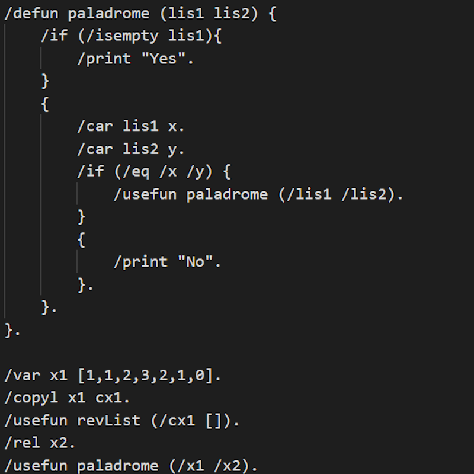
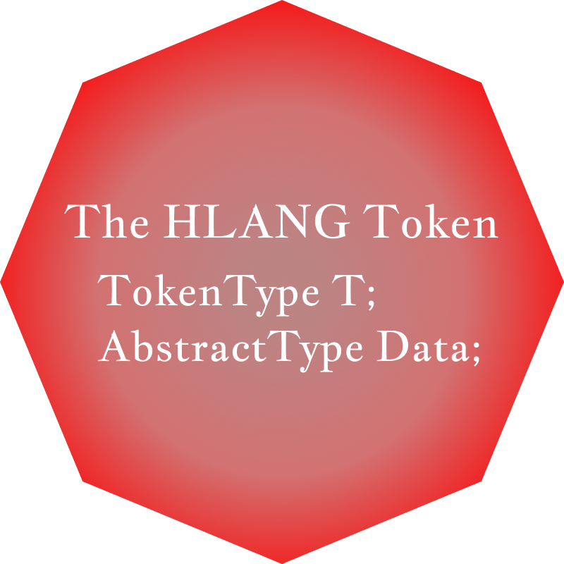
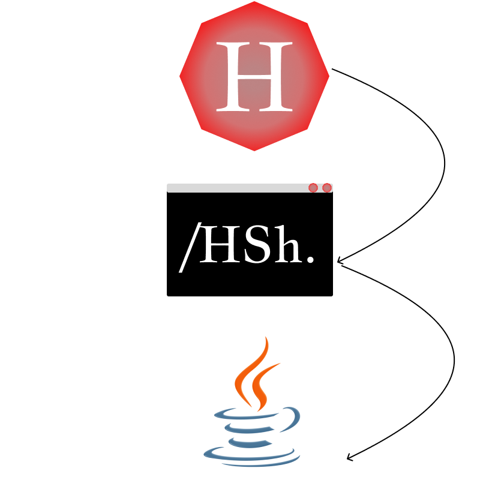

About
About the Creator
Henry's Language (HLANG) is a Functional Programming Language
developed and created by Computer Science Undergratate, Henry Liu,
at California State Polytechnic University, Pomona.

Purpose
HLANG's purpose is to simulate universal variables (called tokens),
manage and navigate SQL databases, and provide coding confort in managing
code.

Structure
Each '/' denotes a command, and each value is defined as a token.
Variables are stored in a token map, where those tokens can easily be
called from.

Token Types
A token can be a list, a string, an integer, it is a completly
wildcard type. With this HLANG can perform functions with different " token types",
and make assumptions based on the data.

Interpreter
HLANG at the moment is an interpreted language, where the interpreter uses the Java
Virual Machine. HLANG uses a stack, while also using a parse tree to interpret
and insert into the stack.

HLANG's Future
Currently, HLANG 1 has been discontinued due to design issues, but HLANG 2 still functions
and is still being updated to this day, with many plans to come in the future.